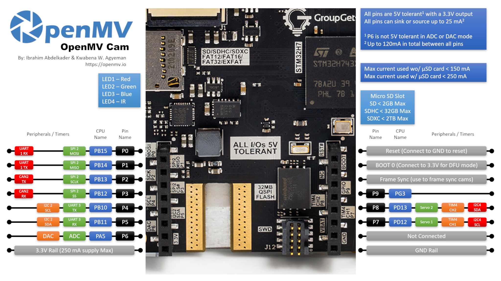

OpenMV Pure Thermal
The OpenMV Pure Thermal is a full‑system thermal imaging board built around the STMicroelectronics STM32H743 (Cortex‑M7 @ 480 MHz) with 64 MB of external SDRAM, 32 MB of QSPI flash, a hardware JPEG codec, a 4.3” 800×480 IPS capacitive touchscreen, an HDMI output, a FLIR® Lepton® thermal socket, and a 5 MP OV5640 visible‑light camera. It also packs Wi‑Fi, a microSD socket, a laser rangefinder, a buzzer, and a high‑power white illuminator.

For full datasheet, photos, and dimensions see the OpenMV Pure Thermal product page.
Highlights
STMicroelectronics STM32H743XI Cortex‑M7 at 480 MHz.
Hardware JPEG encoder/decoder.
64 MB external SDRAM (~400 MB/s) plus 1 MB internal SRAM.
2 MB internal flash + 32 MB external QSPI flash (~50 MB/s read).
OV5640 5 MP rolling‑shutter visible‑light sensor.
FLIR® Lepton® socket — accepts any Lepton 1/2/2.5/3/3.5 module, radiometric or non‑radiometric, with per‑pixel temperature in degrees Celsius.
4.3” 800×480 IPS capacitive touchscreen (24‑bit colour @ 60 Hz) with up to 5‑point gesture support.
HDMI output via TFP410 DVI serializer — up to 1280×720 @ 60 Hz.
Wi‑Fi via WINC1500; MJPEG over RTSP supported out of the box.
Full‑speed USB‑C (12 Mb/s, 900 mA current‑limited) — appears as VCP + USB mass storage to the host, also handles charging.
microSD socket — SD up to 2 GB, SDHC up to 32 GB, SDXC up to 2 TB.
VL53L1CX laser rangefinder (up to ~4 m).
Buzzer with software‑controlled volume / frequency.
High‑power white LED illuminator in addition to the user RGB status LED.
LiPo battery connector with USB charging at 500 mA.
10 I/O pins, 5 V tolerant with 3.3 V output, 25 mA per pin (120 mA total), interrupt‑capable. P6 is not 5 V tolerant when used in ADC or DAC mode.
ARM 10‑pin SWD connector for ST‑LINK / J‑Link debugging.
Qwiic connector for I²C peripherals.
Note
The board has a slot on its bottom‑left edge for an optional ¼”–20 tripod nut. It isn’t fitted from the factory — solder one into the slot if you want to mount the board on a standard camera tripod.
Pinout
{kind=link}

Pin reference
Pin name |
Function |
|---|---|
P0 |
UART1 RX / SPI2 MOSI |
P1 |
UART1 TX / SPI2 MISO |
P2 |
SPI2 SCK / FDCAN2 TX |
P3 |
SPI2 NSS (CS) / FDCAN2 RX |
P4 |
I2C2 SCL / UART3 TX / TIM2 CH3 |
P5 |
I2C2 SDA / UART3 RX / TIM2 CH4 |
P6 |
ADC / DAC / TIM2 CH1 |
P7 |
I2C4 SCL / TIM4 CH1 |
P8 |
I2C4 SDA / TIM4 CH2 |
P9 |
digital I/O |
RESET |
pull to GND to reset the board |
SYN |
frame‑sync pad — not connected |
VIN |
shield VIN pad — not connected |
BOOT0 |
pull to 3.3 V at power‑on for DFU / ROM bootloader |
BUZZER |
on‑board piezo buzzer (TIM2/PWM driven) |
LED_RED |
RGB status LED red channel (active low) |
LED_GREEN |
RGB status LED green channel (active low) |
LED_BLUE |
RGB status LED blue channel (active low) |
LED_WHITE |
high‑power white illuminator LED |
Note
The SYN and VIN pads on the shield/header have no
electrical connection on the Pure Thermal — they’re there for
header compatibility only. Power the board through USB‑C or the
on‑board LiPo battery connector instead (see Power pins below).
Note also that the VIN pad is silkscreened VBAT on the board
(a labelling mistake) — the position is the standard OpenMV‑header
VIN pin and is not connected either way.
Power pins
3.3V — regulated 3.3 V rail. Up to 250 mA available for shields.
GND — common ground.
The Pure Thermal is powered through USB‑C or the on‑board LiPo battery connector. The USB‑C port is current‑limited to 900 mA total and also handles LiPo charging at 500 mA, so plugging a battery in alongside USB is supported.
The on‑board power button toggles the system rails on and off and works whether the board is being powered from USB or from the LiPo. Hold the button for a couple of seconds to switch state — a quick tap is ignored to prevent accidental shutdown.
Source selection follows two simple rules:
The battery only powers the board when its voltage is above 3 V. Below that threshold the on‑board PMIC disconnects the battery to protect it from over‑discharge.
When USB is present, USB powers the board and any attached LiPo charges in the background.
The LiPo connector also features reverse‑voltage protection, so plugging the battery in backwards won’t damage the board.
Note
The board also routes the battery voltage and a battery current sense signal back to MCU ADC channels, but firmware support for either has not been added yet.
Recovery and debug pins
RESET — pull to GND to reset the board. The Pure Thermal also has a dedicated RESET button on the board that does the same thing.
BOOT0 — pull to 3.3 V while powering the board to enter the STM32 ROM bootloader (DFU mode). OpenMV IDE uses this mode to reflash the on‑board bootloader. A dedicated BOOT0 button on the board does the same thing — hold it while applying power.
The board exposes an SWD debug header (RST / SWCLK / SWDIO / SWO) next to the GPIO header, compatible with ST‑LINK and SEGGER J‑Link adapters. A separate ARM 10‑pin SWD connector is also fitted — it carries the same SWD signals (no full JTAG) but in the standard 0.05” 10‑pin form factor.
Note
The SWO trace pin is shared with the on‑board FLIR® Lepton®’s SPI clock. SWO can’t be used at the same time as the Lepton — pick one or the other.
A third PURE Modules Debug connector is fitted on the board. It breaks out a handful of debug‑oriented signals (SWCLK, SWDIO, RST, SPI2_MISO, SPI2_MOSI, VBUS, 3.3 V, GND, and two GPIO pins) for attaching companion modules. The two GPIO pins on this connector are driven by an internal bit‑banged I²C bus rather than a hardware peripheral.
All three debug connectors (the inline SWD header, the ARM 10‑pin SWD connector, and the PURE Modules Debug connector) are referenced to 3.3 V — make sure your debug adapter is configured for 3.3 V logic before connecting.
Onboard peripherals
LEDs
The Pure Thermal has three LEDs on the board:
User RGB LED — software‑controllable, exposed as
LED_RED,LED_GREENandLED_BLUE:from machine import LED LED("LED_RED").on() LED("LED_GREEN").on() LED("LED_BLUE").on()
White illuminator — driven through
LED_WHITE.LED_WHITEis wired active high in hardware while the firmware treats every other on‑board LED as active low, so uselow()/high()rather thanon()/off()(which would invert the sense):from machine import LED light = LED("LED_WHITE") light.low() # turn the white LED ON light.high() # turn the white LED OFF
Charging LED — driven directly by the on‑board power management hardware, no software control. It works whether the system rails are on or off (i.e. with the power button in either position).
Colour
Meaning
Blue
charging — see errata: may not turn off when charging completes
Green
charge complete — see errata: may not trigger reliably
Red
low battery (≤ 3.2 V, only when not actively charging)
Buzzer
The on‑board piezo buzzer is wired to a timer channel — drive it with machine.PWM for tones with software‑controlled frequency (pitch) and duty cycle (volume):
import time
from machine import Pin, PWM
beep = PWM(Pin("BUZZER"), freq=2_000, duty_u16=32768) # ~50% duty
time.sleep_ms(500) # sound for 0.5 s
beep.deinit()
Camera sensor
The OV5640 is the primary CSI on the Pure Thermal — pass
cid=csi.OV5640 to address it explicitly:
import csi
cam = csi.CSI(cid=csi.OV5640)
cam.reset(hard=True)
cam.pixformat(csi.RGB565)
cam.framesize(csi.WVGA)
cam.snapshot(time=2000) # let auto‑exposure settle
while True:
img = cam.snapshot()
The OV5640 module on the Pure Thermal has a voice‑coil autofocus
actuator. Trigger it with the ioctl() API;
IOCTL_WAIT_ON_AUTO_FOCUS blocks until the AF run
finishes (or the optional timeout in milliseconds expires):
cam.ioctl(csi.IOCTL_TRIGGER_AUTO_FOCUS)
cam.ioctl(csi.IOCTL_WAIT_ON_AUTO_FOCUS, 5000)
img = cam.snapshot()
Use IOCTL_PAUSE_AUTO_FOCUS to freeze the lens at its
current position and IOCTL_RESET_AUTO_FOCUS to return to
the factory default.
Note
The OV5640’s STROBE output (used for synchronised flash / IR illumination) is wired up to the MCU on the Pure Thermal, but firmware support for it has not been added yet.
Thermal Camera Sensor
The FLIR® Lepton® socket appears as a second CSI on the same
csi — camera sensors API. Pass cid=csi.LEPTON to address it,
and skip the hardware reset:
import csi
lepton = csi.CSI(cid=csi.LEPTON)
lepton.reset(hard=False)
lepton.pixformat(csi.GRAYSCALE)
lepton.framesize(csi.QVGA)
while True:
img = lepton.snapshot()
Note
The Lepton’s VSYNC output (one pulse per thermal frame) is wired up to the MCU on the Pure Thermal, but firmware support for it has not been added yet.
Both CSIs can run side by side. The example below pulls a colour frame from the OV5640 and a thermal frame from the Lepton, then overlays the Lepton on top of the colour frame using an Ironbow palette and an alpha mask that fades to transparent at low intensity:
import csi
import image
import math
alpha_pal = image.Image(256, 1, image.GRAYSCALE)
for i in range(256):
alpha_pal[i] = int(math.pow((i / 255), 2) * 255)
csi0 = csi.CSI()
csi0.reset(hard=True)
csi0.pixformat(csi.RGB565)
csi0.framesize(csi.WVGA)
csi1 = csi.CSI(cid=csi.LEPTON)
csi1.reset(hard=False)
csi1.pixformat(csi.GRAYSCALE)
csi1.framesize(csi.QVGA)
img1 = image.Image(csi1.width(), csi1.height(), csi1.pixformat())
while True:
img0 = csi0.snapshot()
csi1.snapshot(blocking=False, image=img1)
img0.draw_image(
img1, 0, 0,
color_palette=image.PALETTE_IRONBOW,
alpha_palette=alpha_pal,
hint=image.BILINEAR,
)
Machine learning
ml — Machine Learning runs quantised TFLite models on the Cortex‑M7
with CMSIS‑NN kernels — fast enough for compact detectors at a
few frames per second. Models on the read‑only /rom filesystem
load directly from flash without copying to RAM. Here’s a 128×128
BlazeFace detector overlaying the detected face and its six landmarks
on every frame from the visible‑light camera:
import csi
import time
import ml
from ml.postprocessing.mediapipe import BlazeFace
# Initialize the sensor.
csi0 = csi.CSI()
csi0.reset()
csi0.pixformat(csi.RGB565)
csi0.framesize(csi.VGA)
csi0.window((400, 400))
# Load built-in face detection model
model = ml.Model("/rom/blazeface_front_128.tflite", postprocess=BlazeFace(threshold=0.4))
print(model)
clock = time.clock()
while True:
clock.tick()
img = csi0.snapshot()
# faces is a list of ((x, y, w, h), score, keypoints) tuples
for r, score, keypoints in model.predict([img]):
ml.utils.draw_predictions(img, [r], ("face",), ((0, 0, 255),), format=None)
# keypoints is a ndarray of shape (6, 2)
# 0 - right eye (x, y)
# 1 - left eye (x, y)
# 2 - nose (x, y)
# 3 - mouth (x, y)
# 4 - right ear (x, y)
# 5 - left ear (x, y)
ml.utils.draw_keypoints(img, keypoints, color=(255, 0, 0))
print(clock.fps(), "fps")
Laser rangefinder
The on‑board ST VL53L1CX time‑of‑flight ranger is wired to I²C bus 2. Use the frozen vl53l1x — VL53L1X ToF distance sensor driver driver to get distance readings up to ~4 m:
import time
from machine import I2C
import vl53l1x
bus = I2C(2)
tof = vl53l1x.VL53L1X(bus)
while True:
print("Distance:", tof.read(), "mm")
time.sleep_ms(100)
LCD output
The 4.3” on‑board LCD is 800 × 480 (WVGA) and is driven through
the display — display driver module’s RGB display interface — pass
framesize=display.FWVGA to match its native resolution:
import display
lcd = display.RGBDisplay(framesize=display.FWVGA, refresh=60)
lcd.backlight(True) # turn the LCD backlight on
lcd.write(img)
The backlight is wired to a GPIO, so
backlight() accepts True / False
(or any 0–100 value, where 0 is off and anything non‑zero is on):
lcd.backlight(False) # turn the backlight off
lcd.backlight(True) # back on
Touchscreen
The capacitive touch controller is the FT5X06; multi‑touch positions and gesture events are exposed through ft5x06 — Touch Screen Driver. Register a callback to react to touches and read the active points inside it:
import ft5x06
touch = ft5x06.FT5X06()
def on_touch(n):
for i in range(n):
x = touch.get_point_x(i)
y = touch.get_point_y(i)
print("touch", i, "at", x, y)
gesture = touch.get_gesture()
if gesture != ft5x06.GESTURE_NONE:
print("gesture:", gesture)
touch.touch_callback(on_touch)
HDMI output
The firmware also fans the LCD framebuffer out to the on‑board
tfp410 — DVI/HDMI Controller HDMI serializer, so an external monitor
mirrors what’s on the LCD. Instantiate tfp410.TFP410 to
enable the HDMI output:
import tfp410
hdmi = tfp410.TFP410()
If you only want HDMI output and don’t care about the on‑board LCD, turn the backlight off and bump the framebuffer resolution above WVGA. The TFP410 supports up to 1280×720 @ 60 Hz, so for example:
lcd = display.RGBDisplay(framesize=display.HD, refresh=60)
lcd.backlight(False) # the on‑board LCD can't render HD
hdmi = tfp410.TFP410()
The on‑board panel is fixed at 800×480, so anything above WVGA is only meaningful on the external HDMI monitor.
To know when an HDMI monitor has been plugged in or unplugged,
register a hot‑plug callback on the TFP410. The callback fires with
True on attach and False on detach:
def on_hotplug(connected):
print("HDMI", "connected" if connected else "disconnected")
hdmi.hotplug_callback(on_hotplug)
You can also poll the connection state at any time with
isconnected() (only when no callback is
registered).
The HDMI port also carries the DDC (display data) and CEC (consumer electronics control) channels, exposed through the class DisplayData – Display Data class. Use it to read the attached monitor’s EDID block (so you can adapt to its native resolution / refresh rate) or to send/receive CEC frames for controlling other HDMI devices on the same wire:
from display import DisplayData
dd = DisplayData(cec=True, ddc=True)
edid = dd.display_id() # EDID bytes from the monitor
print(len(edid), "byte EDID")
# Send a CEC "image view on" command (opcode 0x04) from address 1 to address 0
dd.send_frame(0, 1, b"\x04")
# ...or wait for an incoming CEC frame addressed to us (logical address 1)
src, data = dd.receive_frame(1, timeout=5_000)
print("CEC from", src, ":", data)
Wi‑Fi
Wi‑Fi runs over a Microchip WINC1500 module, exposed through the class WINC – wifi shield driver interface:
import network, time
wlan = network.WINC()
wlan.connect("ssid", "password")
while not wlan.isconnected():
time.sleep(1)
print("Wi‑Fi IP:", wlan.ipconfig("addr4")[0])
Note
Due to part shortages, some Pure Thermal units shipped without
the WINC1500 module populated. If network.WINC raises
an error or never connects, check the board for a missing Wi‑Fi
module — the rest of the camera works exactly the same way without
it.
microSD card
When a card is inserted it is mounted automatically at /sdcard
and is usable through the regular file system:
import os
for entry in os.listdir("/sdcard"):
print(entry)
Bus reference
GPIO
Use machine.Pin to read or drive any of the silkscreened pins. Outputs are 3.3 V CMOS, 5 V tolerant on the input side, and can sink/source up to 25 mA per pin (120 mA total across the whole header).
from machine import Pin
out = Pin("P0", Pin.OUT)
out.on()
out.off()
out.value(1)
inp = Pin("P1", Pin.IN, Pin.PULL_UP)
print(inp.value())
Any input pin can also fire an interrupt on edge transitions:
def handler(pin):
print("triggered:", pin)
Pin("P1", Pin.IN, Pin.PULL_UP).irq(
handler, Pin.IRQ_FALLING | Pin.IRQ_RISING,
)
UART
Bus |
TX |
RX |
|---|---|---|
UART1 |
P1 |
P0 |
UART3 |
P4 |
P5 |
from machine import UART
uart = UART(3, baudrate=115200)
uart.write("hello")
uart.read(5)
I²C
Bus |
SCL |
SDA |
|---|---|---|
I2C2 |
P4 |
P5 |
I2C4 |
P7 |
P8 |
from machine import I2C
i2c = I2C(2, freq=400_000)
i2c.scan()
i2c.writeto(0x76, b"hi")
The same hardware can also be used in target (slave) mode through machine.I2CTarget to expose a memory region to another I²C controller:
from machine import I2CTarget
buf = bytearray(32)
target = I2CTarget(2, addr=0x42, mem=buf)
The on‑board Qwiic connector breaks out one of these I²C buses for plug‑and‑play modules. The Qwiic line is level‑shifted to 5 V through open‑drain transistors, so the bus is limited to standard mode (100 kHz) and fast mode (400 kHz) only — don’t try to run fast‑mode‑plus or higher rates through the Qwiic header.
The Qwiic connector outputs 5 V to power attached modules; it cannot be used to power the Pure Thermal itself — power the board through USB‑C or the LiPo battery connector instead.
SPI
Bus |
MOSI |
MISO |
SCK |
CS |
|---|---|---|---|---|
SPI2 |
P0 |
P1 |
P2 |
P3 |
from machine import SPI
from machine import Pin
spi = SPI(2, baudrate=10_000_000)
cs = Pin("P3", Pin.OUT, value=1) # CS is not driven by the SPI peripheral
cs.value(0)
spi.write(b"hello")
cs.value(1)
CAN (FDCAN)
Bus |
TX |
RX |
|---|---|---|
FDCAN2 |
P2 |
P3 |
from machine import CAN
can = CAN(2, 500_000)
can.send([0xDE, 0xAD, 0xBE, 0xEF], 0x123)
print(can.recv())
ADC and DAC
P6 is the only user analog pin. It can be used as either a 12‑bit ADC input or a DAC output.
ADC — full‑scale at 3.3 V at the pin:
from machine import ADC import time adc = ADC("P6") while True: voltage = adc.read_u16() * 3.3 / 65535 print(voltage) time.sleep_ms(100)
DAC — through
pyb.DAC. The 8‑bit value covers 0–3.3 V:from pyb import DAC dac = DAC("P6") voltage = 1.65 dac.write(int(voltage / 3.3 * 255))
In ADC or DAC mode P6 is 3.3 V tolerant only — do not feed it 5 V.
PWM
Pin |
Timer / channel |
|---|---|
P4 |
TIM2 CH3 |
P5 |
TIM2 CH4 |
P6 |
TIM2 CH1 |
P7 |
TIM4 CH1 |
P8 |
TIM4 CH2 |
Note
TIM1 is reserved by the firmware to generate the camera sensor’s pixel clock, so the TIM1 channels that are physically on P0/P1/P2 cannot be used for user PWM without breaking the camera.
TIM4 is shared with pyb.Servo — instantiating a servo reconfigures the whole timer for 50 Hz operation, so don’t mix machine.PWM on P7/P8 with pyb.Servo in the same script.
Drive any of them via machine.PWM:
from machine import Pin, PWM
pwm = PWM(Pin("P7"), freq=1_000, duty_u16=32768)
Software bit‑banged buses
machine.SoftI2C and machine.SoftSPI work on any GPIO if you need an extra bus.
Timing
time
import time
time.sleep(1)
time.sleep_ms(500)
time.sleep_us(10)
start = time.ticks_ms()
elapsed = time.ticks_diff(time.ticks_ms(), start)
Virtual timers
from machine import Timer
one_shot = Timer(-1)
one_shot.init(period=5_000, mode=Timer.ONE_SHOT,
callback=lambda t: print("once"))
periodic = Timer(-1)
periodic.init(period=2_000, mode=Timer.PERIODIC,
callback=lambda t: print("tick"))
Period values are in milliseconds. Call deinit()
to stop and release the slot.
Real‑time clock
from machine import RTC
rtc = RTC()
rtc.datetime((2026, 4, 30, 4, 12, 0, 0, 0))
print(rtc.datetime())
If a LiPo battery is connected, the RTC keeps time even while the system rails are off (powered down via the on‑board power button). With only USB plugged in, pressing the power button cuts power to the RTC as well — so wall‑clock time will not survive a power cycle without a battery attached.
Watchdog
from machine import WDT
wdt = WDT(timeout=5_000)
while True:
# ...do work...
wdt.feed()
Boot and runtime info
USB bootloader window
On every power‑up the camera runs a short bootloader (a few seconds)
that lets OpenMV IDE update the firmware without the user having to
enter DFU mode. After the window expires the bootloader hands off to
boot.py and then main.py.
A running script can re‑enter the bootloader on demand by calling
machine.bootloader().
Filesystem and boot order
The Pure Thermal firmware mounts up to three filesystems on boot:
Internal flash — always mounted at
/flash. Holdsmain.pyandREADME.txtby default; created on the very first boot.microSD card — if a card is inserted it is mounted at
/sdcard.ROMFS — read‑only, memory‑mapped filesystem at
/romused to ship large data assets (e.g. AI models) that benefit from zero‑copy access. Mounted automatically by MicroPython at startup, before any user Python runs.
After mounting, the working directory is set to /sdcard when the
card is present, otherwise /flash. The interpreter then runs
scripts from that directory:
boot.pyis executed on every soft reset.main.pyis executed only on cold boot, immediately afterboot.py.
Dropping a boot.py or main.py onto the SD card overrides the
copy in flash without touching it.
When connected over USB, the boot filesystem (/sdcard if a card
is present, otherwise /flash) also enumerates as a USB
mass‑storage drive on the host. Eject the drive before resetting
the camera so the host flushes its cached writes.
Note
Files created or modified by code running on the OpenMV Cam will not show up on the host until the drive is re‑mounted. Use the SD card for any data the script writes back, and remount before reading those files from the host.
Hard‑fault indicator
If the user RGB LED is rapidly cycling through all colours — fast enough that it tends to look like a twinkling white LED rather than distinct hues — the firmware has hit an unrecoverable hard fault. Reflash the firmware to recover.
Hardware errata
A handful of board‑level quirks are documented in the Pure Thermal hardware errata. Key items to be aware of:
Battery connector interference — components on the PCB sit directly under the LiPo battery connector, and the protruding wedge on the battery cable’s plug can catch on them when the cable is removed, sometimes pulling parts off the board. Trim the wedge off the cable plug with flush cutters before first use.
RTC stops while the board is powered off — the load capacitance on the 32 kHz crystal (Y2) is too high. Removing C96 and C97 (the pair flanking the crystal next to the STM32) lets the RTC keep running on backup power. Most boards ship with these caps already removed; if your RTC loses time when unplugged, check those positions. See GitHub issues #1536 and #1600 for the full thread.
Charging indicator LED stays blue — the charger may end its charge cycle anywhere between 4.15 V and 4.19 V without flipping the indicator from blue (charging) to green (charged). The battery is still fully charged in this case; trust a voltage measurement, not the LED.
Silkscreen mislabels VIN as VBAT — the pad in the standard OpenMV‑header VIN position is silkscreened
VBATon the Pure Thermal. The label is wrong, but it doesn’t matter in practice because the pad has no electrical connection either way.
Software libraries
See the library index for the full list of modules — including which ones are unique to the Pure Thermal build.